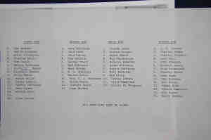

|
|
|
|
|
| 
Charles BUCK (Abt 1710-1771) |
Charles BUCK
General Notes: Moved from York County into Westmoreland County, but after a short stay there, and having received a bequest from his uncle Joseph, in about 1735 he moved westward into the Shenandoah Valley, which his son Thomas later called "This wild and savage country". He prospered there, and became a large landowner near what is now Front Royal, VA. He was a Vestryman of Frederick Parish, Lieutenant of Militia, Trustee for the town of Strasburg, Overseer of Roads, and otherwise active and influential in county affairs. He was an ardent sportsman, and his negro jockey "Dick" is said to have been the first slave carried across the Blue Ridge Mountains. Charles married Anna Sorrell EARLE, daughter of Samuel Noah EARLE and Anna SORRELL, in 1747 in Muddy Run, , Virginia, USA.5067 (Anna Sorrell EARLE was born in 1728 5032,5066 and died in 1749 5032,5066.) Charles next married Letitia SORRELL, daughter of Thomas SORRELL and Elizabeth O'CANNY, in 1749.5066 (Letitia SORRELL was born about 1715 in , Westmoreland Co., Virginia, USA 5066 and died after 1771 5066.) |
Search using Google Custom Search:
Table of Contents | Surnames | Name List
This website was created 2 Mar 2025 with Legacy 10.0, a division of MyHeritage.com; content copyrighted and maintained by coddgenealogy at gmail d0t com